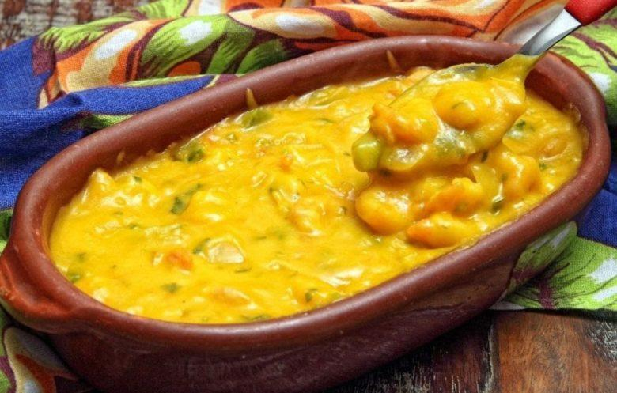

Bobó de Camarão - Brazilian Shrimp Stew

Description
Bobó de Camarão is an iconic Brazilian Shrimp Stew recipe that features shrimp, palm oil, coconut milk and yuca root. This colorful dish has delicate flavor and texture, thanks to the combination of yuca and coconut milk. It's an easy, yet impressive one-pot recipe meant for serving over rice and sharing with loved ones. Your familia is going to love it!
This is a classic example of the use of local ingredients to recreate African dishes on Brazilian soil. Starchy porridge-like mashes, being a major component of the African diet, took advantage of okra, bananas, yuca, and yuca flour as thickeners in Afro-Brazilian cooking.
In a classic Brazilian Shrimp Stew recipe, we have dendê palm oil, a west African ingredient, mixed with Brazilian chili peppers and coconut milk - a signature combination of the Bahia region - and yuca, a native ingredient, as a thickener.
The marriage of those ingredients is just incredibly delicious. The mash has a sweetness, thanks to the bell peppers, coconut milk and shrimp. But a bobó isn't really a bobó without hot peppers. That hint of heat gives this dish a kick to let you know what Bahia is all about.
Ingredients
- Yuca Root - this is a main ingredient. Therefore, there's no substitute. But don't fret! Yuca is fairly easy to find in big cities grocery stores or in Latin Markets.
- Palm Oil - this is another main ingredient, known in Portuguese as Azeite de Dendê. In big cities, it can be found in healthy stores like Whole Foods, Central Market, etc. or in Brazilian markets, African markets, Latin markets, Asian markets or online, like this one. This ingredient offers beautiful color to the dish, but please be careful not to exceed the amount the recipe calls for. Too much can cause indigestion. If you really can't find it, you may replace it with coconut oil, but please note, your dish will have a lot less color.
- Large Shrimp - whether it's pink, white, etc. Here in Texas, I get Gulf shrimp, but get what you can - just make sure it's deveined and peeled. If you're buying frozen, note that thawed shrimp can weigh less. Keep that in mind and get a little extra!
- Red, Yellow and Green Bell Peppers - yes, all three!! We like colorful dishes in Brazil, and the different colors of peppers give slightly different flavors, too.
- Hot Peppers - in Brazil, we use pimenta malagueta or dedo de moça, which you can substitute for a red aji pepper. However, they are nearly impossible to find where I live, so I use fresh serrano pepper.
- Coconut Milk - the kind from the can, like this one. Do not use the one from the box.
- Cilantro - we use this in the dish and for garnish. If you're sensitive to cilantro, you may replace it with curly leaf parsley, which is milder in flavor than flat leaf parsley.
- Lime juice - please juice your lime fresh instead of purchasing shelf-stable lime juice.
- Brazilian sofrito or garlic
- Tomatoes
- Fresh Ginger
- Onion
- Green Onion
Steps
- Begin by gathering and measuring all the necessary ingredients for Brazilian Shrimp Stew.
- Dice the onions and bell peppers into small pieces.
- Cut the tomatoes into large chunks, including the seeds and juices.
- Grate the ginger, saving both the grated ginger and the juice.
- Roughly chop the herbs, as finely mincing them is not required.
- For the chili pepper, consider your heat preference. For mild heat, remove the seeds and cut into larger chunks. For more spice, slice the chili pepper thinly, including the seeds and ribs. You can also double the red pepper or use hot oil as a topping.
- Peel and Shred the Yuca
- Yuca is similar to a large potato with thick skin. Use a vegetable peeler to remove the skin, peeling it multiple times if needed to get rid of all the skin and wax.
- Cut the yuca into manageable chunks for shredding.
- Remove the tough rope-like center with a knife.
- Shred the yuca either by hand using a box grater or with a food processor that has a shredder attachment, which is more convenient.
source
Return to main page